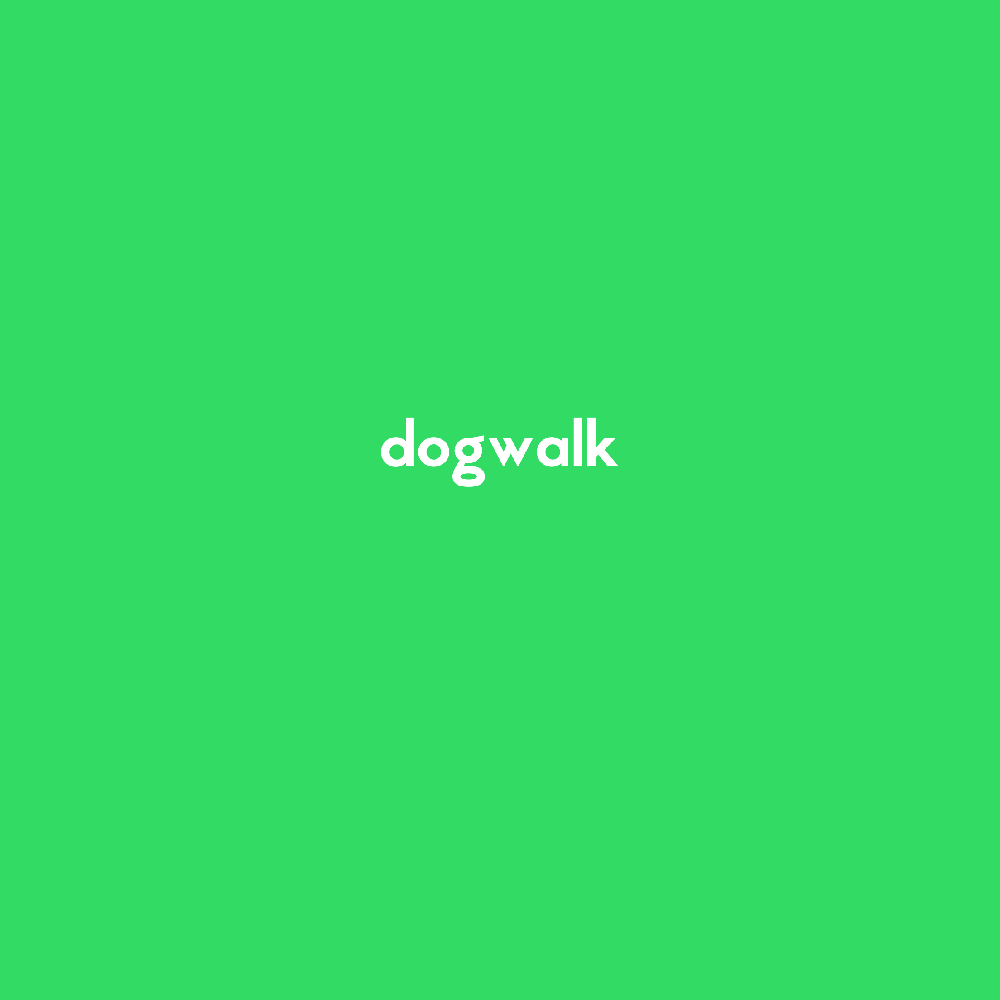

<!DOCTYPE html>
<html lang="en">
  <head>
    <meta charset="utf-8" />
    <title>Ionic App</title>

    <base href="/" />

    <meta name="color-scheme" content="light dark" />
    <meta
      name="viewport"
      content="viewport-fit=cover, width=device-width, initial-scale=1.0, minimum-scale=1.0, maximum-scale=1.0, user-scalable=no"
    />
    <meta name="format-detection" content="telephone=no" />
    <meta name="msapplication-tap-highlight" content="no" />

    <link rel="icon" type="image/png" href="assets/icon/favicon.png" />

    <!-- add to homescreen for ios -->
    <meta name="apple-mobile-web-app-capable" content="yes" />
    <meta name="apple-mobile-web-app-status-bar-style" content="black" />
  </head>

  <body>
    <!-- <div id="splash-screen">
      
    </div> -->
    <app-root></app-root>
  </body>
</html>

<script>
  window.addEventListener("load", () => {
    const splashScreen = document.getElementById("splash-screen");
    if (splashScreen) {
      // Mantener el splash screen visible por 2 segundos antes de empezar a desvanecer
      setTimeout(() => {
        // Cambiar la opacidad a 0 para iniciar el desvanecimiento
        splashScreen.style.opacity = "0";
        // Después de 500ms (tiempo de la transición), ocultar el splash screen
        setTimeout(() => {
          splashScreen.style.display = "none";
        }, 500); // Tiempo de la transición de opacidad
      }, 5000); // Tiempo antes de que el splash screen comience a desvanecerse (2 segundos)
    }
  });
</script>
